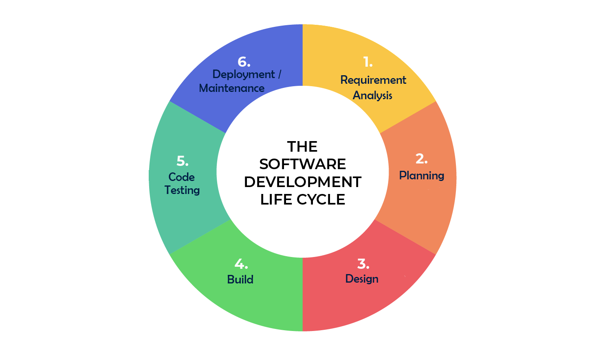
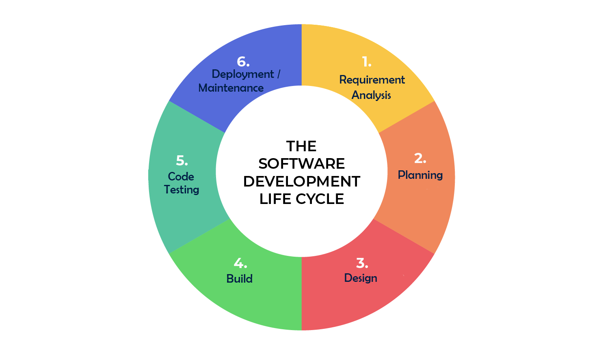

Preguntas HTML:
1. ¿Cuál es la diferencia entre Internet y la World Wide Web?Internet es una red de computadoras alrededor de todo el mundo conectadas entre sí, mientras que la World Wide Web es una enorme colección de páginas que se asienta sobre esa red de computadoras.
2. ¿Cuáles son las partes de un URL?- Protocolo
- Subdominio
- Dominio
- Ruta
- Parámetro
- Etiqueta
GET: solicita datos de un recurso especifico
HEAD: verificar que el curso esta presente antes de un GET
POST: enviar datos a un servidor para crear un recurso
PUT: actualizar el recurso existente en un servidor utilizando el cont. del cuepor de la solicitud
PATCH: aplicar modificaciones parciales a un recurso
DELETE: elimina el recurso especificado
4. ¿Qué método HTTP se debe utilizar al enviar un formulario HTML, por ejemplo cuando ingresas tu usuario y contraseña en algún sitio? ¿Por qué?El método POST, ya que con este los datos ingresados se envían al servidor y verificar su validez.
5. ¿Qué método HTTP se utiliza cuando a través de un navegador web se accede a una página a través de un URL?GET, ya que con este se solicitan los datos de la página a la cual se desea acceder
6. Un servidor web devuelve una respuesta HTTP con código 200. ¿Qué significa esto? ¿Ocurrió algún error?Esto significa que la solicitud ha tenido éxito, pero este significado de éxito varia dependiendo del método HTTP, por lo que no ha ocurrido un error.
7. ¿Es responsabilidad del desarrollador corregir un sitio web si un usuario reporta que intentó acceder al sitio y se encontró con un error 404? ¿Por qué?No, es la responsabilidad del cliente ya que el servidor no pudo encontrar el contenido solicitado. Este código de respuesta es uno de los más famosos dada su alta ocurrencia en la web.
8. ¿Es responsabilidad del desarrollador corregir un sitio web si un usuario reporta que intentó acceder al sitio y se encontró con un error 500? ¿Por qué?Si, ya que el servidor ha encontrado una situación que no sabe cómo manejarla. Por lo tanto debe ser corregida.
9. ¿Qué significa que un atributo HTML5 esté depreciado o desaprobado (deprecated)? Menciona algunos elementos de HTML 4 que en HTML5 estén desaprobados.Que un elemento atributo del html esta desactualizado o en desuso por lo que ha quedado obsoleto por nuevas construcciones. Ej: link, align, background, etc.
10. ¿Cuáles son las diferencias principales entre HTML 4 y HTML5?Que en HTML4 todo esta mezclado, mientras que en HTML5 la estructura esta dividida por la semántica de la página.
11. ¿Qué componentes de estructura y estilo tiene una tabla?Son celdas de tabla acomodadas en columnas y filas, se les puede agregar headers.
12. ¿Cuáles son los principales controles de una forma HTML5?form, label, input, select, option, button, etc.
13. ¿Qué tanto soporte HTML5 tiene el navegador que utilizas?Usando Chrome Dev 98.0.4758.80 on macOS Catalina 10.15: 476 pts de 555
14. ¿Cuál es el ciclo de vida de los sistemas de información? 15. ¿Cuál es el ciclo de desarrollo de sistemas de información?

15. ¿Cuál es el ciclo de desarrollo de sistemas de información?
